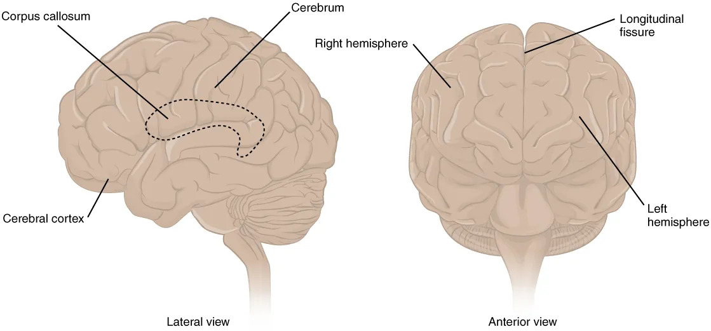

高中生物竞赛讲义 · 集训营
第十章 人及哺乳动物的形态和解剖结构
第十三节 神经系统 · 三、中枢神经系统——脑
📅 整理日期: 2026年7月4日
三、中枢神经系统——脑
组成：延髓、脑桥、中脑
- 延髓：呼吸中枢、心血管中枢、"生命中枢"
- 脑桥：连接小脑，含面神经核等
- 中脑：含上丘（视觉反射）、下丘（听觉反射）、红核、黑质（参与运动调节）
- 位置：颅后窝，大脑半球后方
- 功能：维持身体平衡、调节肌张力、协调随意运动
- 小脑损伤：共济失调（运动不协调）
- 丘脑：感觉传导的中继站（除嗅觉外所有感觉传入均经丘脑中继）
- 下丘脑：体温调节、水平衡、摄食、内分泌调节（与垂体相连）
- 大脑半球：表面为大脑皮质（灰质），深部为髓质（白质），底部为基底核
- 大脑分叶：额叶、顶叶、颞叶、枕叶、岛叶

图4：大脑皮质分叶（来源：OpenStax Anatomy and Physiology 2e, Figure 13.6, CC BY-NC-SA 4.0）
| 功能区 |
位置 |
功能 |
| 第I躯体运动区 |
中央前回 |
管理对侧躯体运动（倒置分布，头部正置） |
| 第I躯体感觉区 |
中央后回 |
管理对侧躯体感觉（倒置分布） |
| 视觉区 |
枕叶距状沟周围 |
视觉 |
| 听觉区 |
颞横回 |
听觉 |
| 语言区 |
多位于左半球 |
运动/感觉/书写/阅读语言 |
大脑皮质功能定位三大特点：
- 交叉性：一侧大脑皮质管理对侧躯体的运动和感觉（经锥体交叉和内侧丘系交叉等换元后交叉到对侧）。
- 倒置性：皮质代表区呈“头下脚上”的倒置排列；但头面部本身为正置（喉、舌在中央前回/后回的下部外侧）。
- 皮质代表区大小与功能精细程度相关：功能越精细、动作越灵活的部位，所占皮质面积越大；如手（尤其拇指）、唇、舌的代表区远大于躯干。
- 组成：扣带回、海马、杏仁核等
- 功能：情绪、记忆、内脏活动调节
- 脑干网状结构上行激活系统：维持大脑觉醒状态
- 下行系统：调节肌张力